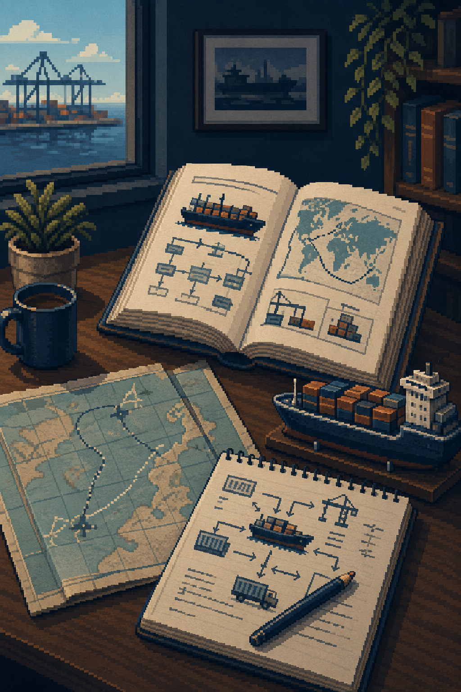
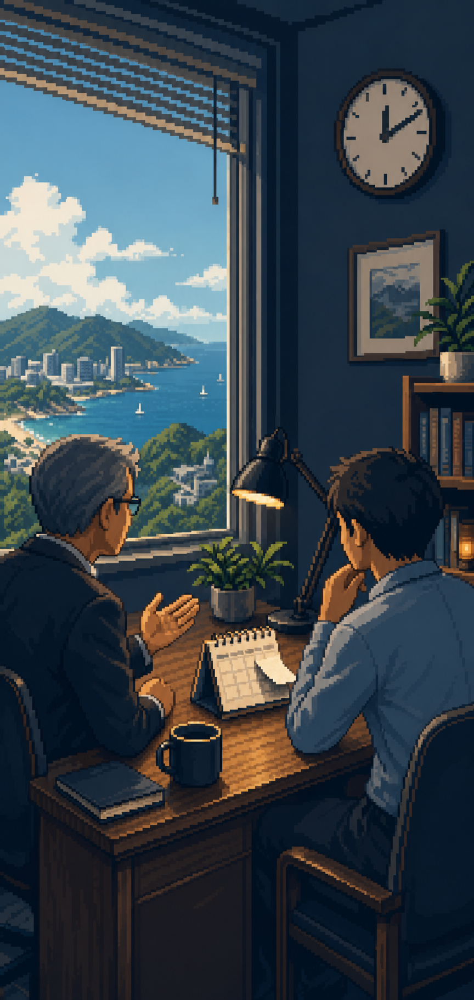
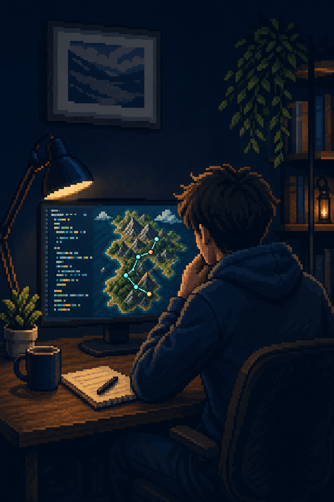
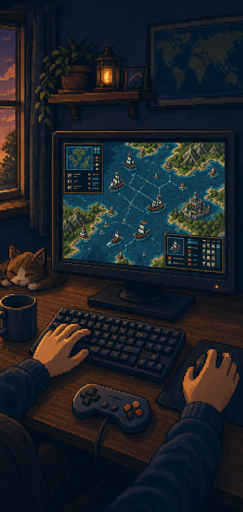
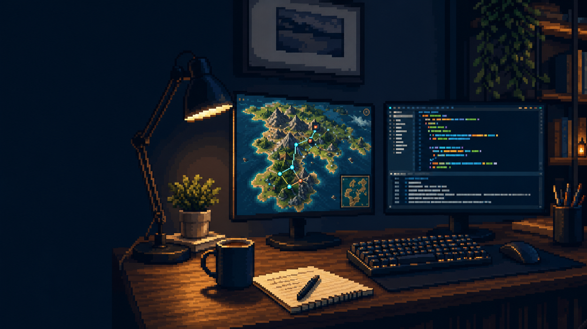
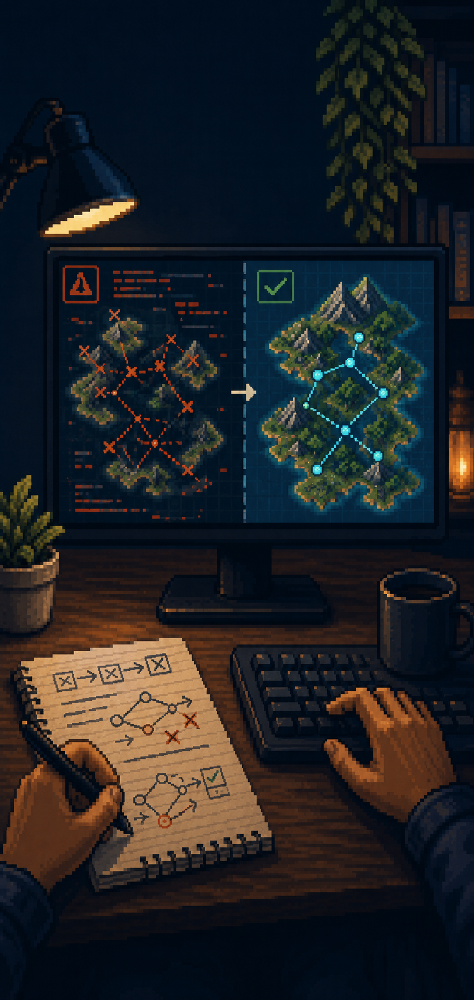
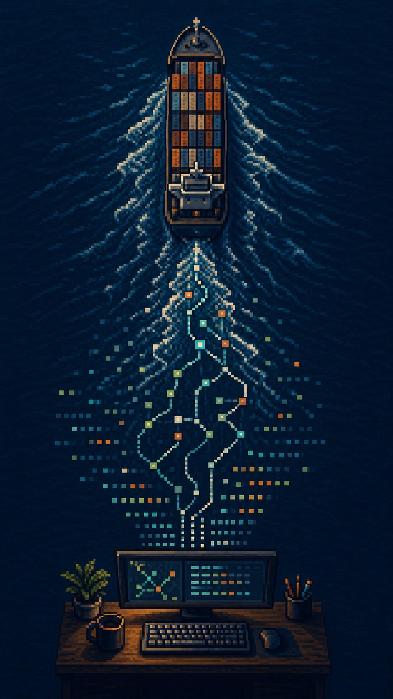
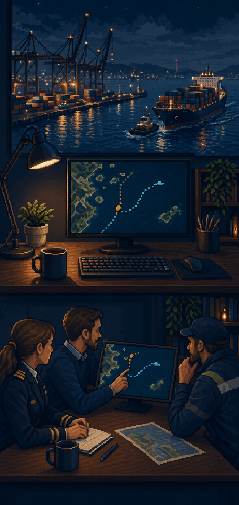
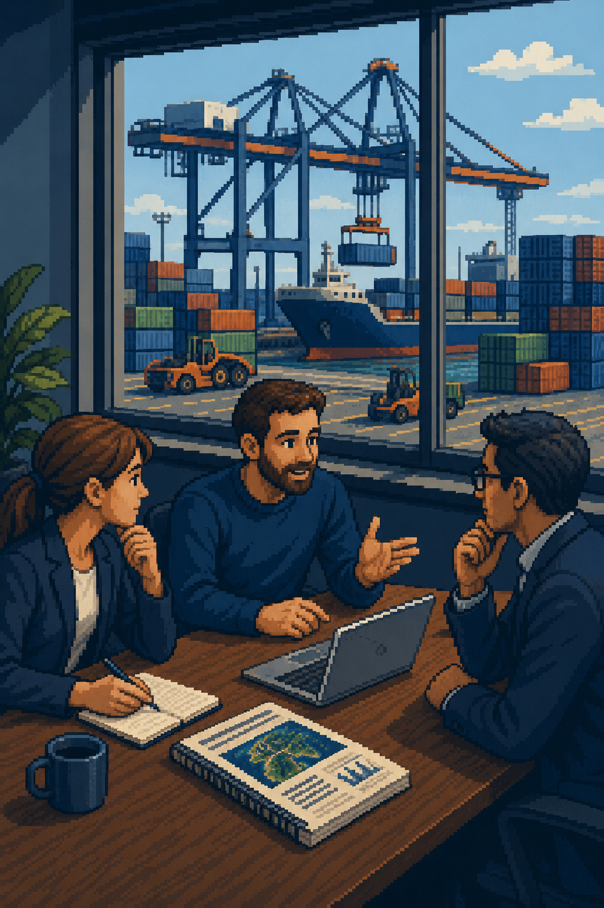

A personal route through shipping, code and one unexpected decision.
My grandfather and my father both worked at sea. Shipping therefore felt personal long before it became an academic subject.
I started with international shipping management, then moved into logistics and environmental policy.

I had accepted a supply-chain management job at Huawei. A PhD was not the plan.
I thought it might simply help fund my flight ticket home.
Prof. Alexis Lau encouraged me to stay. The next day, I decided to pursue a PhD.

The opportunity explains how I started. It does not fully explain why I stayed.

Games made me curious about computers, rules and complex systems.

Coding changed me from someone who played with systems into someone who could build and analyse them.

A hard problem. Repeated attempts. Debugging. And finally, a pattern that makes sense.

Research brought the two together.

Large-scale shipping activity data reveals patterns that are difficult to see from the shore.
Observe real activity. Interpret it with code. Translate the result into something decision-makers can use.

The work matters when evidence enters a real conversation and supports a practical next step.

I want to keep connecting research, public policy and industry action in the transition to lower-carbon shipping.